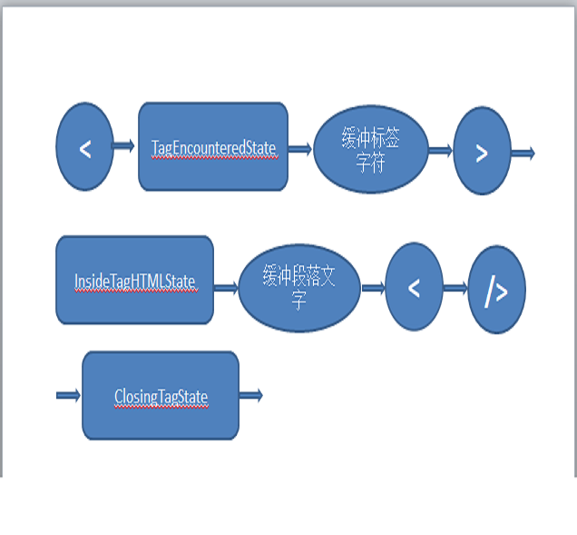

HTML transfer into PDF
PDF document is a popular document type in many ways, such as scientific paper/book/business report. in this blog, I am going to show you how to translate HTML document to PDF document, after reading my idea, you will realize that our imagination is limited by our understanding of code.
Definition
- 词法
-
词汇通常用正则表达式表示
INTEGER :0|[1-9][0-9]*
PLUS : +
MINUS: - - 语法
-
语法通常使用一种称为 BNF 的格式来定义
expression := term operation term
operation := PLUS | MINUS
term := INTEGER | expression - iText
-
iText是一个操作PDF文档的开源项目，由java和.net编写。
iText在能够创建标准PDF的同时，还能将XML、HTML、Web表单、CSS或者其他数据库文件转换成PDF，而且保证格式的标准统一。
iText可以切割、合并文档，还对页面进行复制、导入和覆盖的操作，同时可以加入、编写结构更加丰富的多样化内容，比如条形码、水印、印章、表格和图片等。
浏览器解析HTML过程
作为超文本标记语言，HTML定义了展示网页信息一种规范。浏览器在解释HTML生成最终视图的时候，大概是这样的：
1. 解析文档；
2. 布局，为每个节点分配一个应出现在屏幕上的确切坐标；
3. 绘制，呈现引擎会遍历呈现树，由用户界面后端层将每个节点绘制出来；
4. 显示，值得注意的是这一步并不会等到文档解析完成，会将部分已解析的文档尽快显示。

图1：浏览器主要组件

图2：呈现引擎的基本流程

图3：WebKit 主流程
无法显示
使用java解析HTML

需要解析这个文档，我们需要知道：文档中每个符号代表的意义不是固定的，而是配合当前文档上下文的语义来解释。这意味着，读取同样的字符，可能因为当前状态的不同，得到不同的下一个状态。
那么我们可以用数学的方式来解这道难题：
将解析HTML过程中当前状态抽象为“状态”，所有解析操作放在当前“状态”下执行。大概是这样的：
//部分代码如下
/**
* 表示解析HTML文档的生命周期
*
* @author 玄葬
*
*/
public interface HTMLLifeCycle {
public HTMLLifeCycle addHTMLLifeCycleListenter(HTMLLifeCycleListener l);
public HTMLLifeCycle removeHTMLLifeCycleListenter(HTMLLifeCycleListener l);
/**
* 当在开始标签前读取到任何内容时触发
*/
public void unknownText();
/**
* 当读取到开始标签时触发
*/
public void startElement();
/**
* 当读取到结束标签时触发
*/
public void endElement();
/**
* 当读取到注释时触发
*/
public void comment();
}
/**
* 观察者设计模式
* 监听{@link HTMLLifeCycle}的生命周期事件
*
* @author 玄葬
*
*/
public interface HTMLLifeCycleListener {
/**
* 标签开始----->pipeline open方法----->生成PDF
*/
void startElement(String tag, Map attributes, String ns);
/**
* 标签结束----->pipeline close方法----->生成PDF
*/
void endElement(String tag, String ns);
/**
* 标签内容----->pipeline content方法----->生成PDF
*/
void text(String text);
/**
* 标签外内容
*/
void unknownText(String text);
/**
* 注释
*/
void comment(String comment);
/**
* 解析开始
*/
void init();
/**
* 解析结束
*/
void close();
}